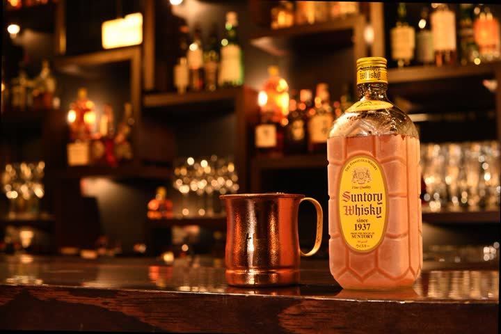
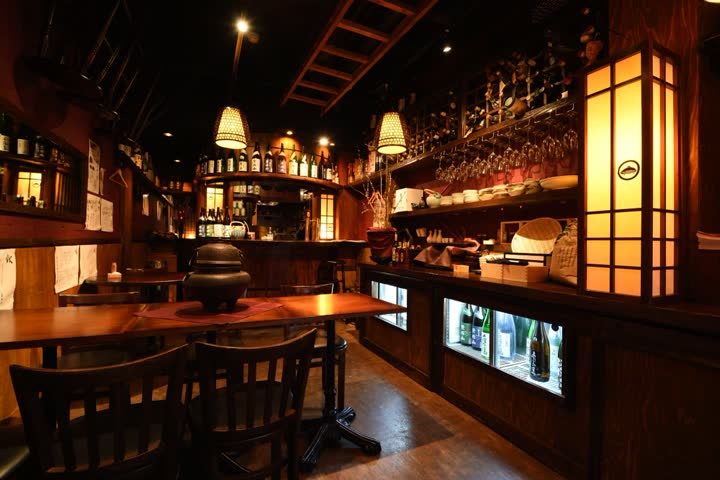

本命
本命黒 × 琥珀 の酒場サイト旧サイトの雰囲気とロゴをそのまま引き継ぎ、情報量を最大化した案（全12ページ）
トップ、店舗4ページ（各ページに目次バー・メニュー・Instagram・地図）、ハイボール、アテ、宮城、アクセス（全店ピン地図）、会社概要、英語ページ、404。店舗ごとの構造化データとsitemapで、店名検索でも各ページが出る前提の作り。
- 参考
- 旧サイト（keikadou.co.jp）の色・ロゴ・写真・文章
- 向いている
- 今の雰囲気を変えずに、情報を増やして検索に強くしたいとき
本命1案と、雰囲気の違う別案7案です。それぞれ「トップ」と「バーカドヤ」の2ページ（本命は全12ページ）を作ってあります。カードの「開く」で各案を見られます。URL欄の「コピー」で、LINEなどに貼り付けられます。各案の右上や下部のリンクから、この一覧には戻れないので、ブラウザの「戻る」をお使いください。
本命トップ、店舗4ページ（各ページに目次バー・メニュー・Instagram・地図）、ハイボール、アテ、宮城、アクセス（全店ピン地図）、会社概要、英語ページ、404。店舗ごとの構造化データとsitemapで、店名検索でも各ページが出る前提の作り。
 案A
案A飲食店運営会社に最も多い王道構成。白地にえんじ色の差し色、明朝の英字。「会社」として見せたいときに。
 案B
案Bクリーム地に大きな明朝、01〜03の章とインタビューで物語を読ませる。写真と文章の量で勝負する案。
 案C
案C蕎麦酒場らしい和の設え。品書きも漢数字の縦長レイアウト。落ち着いた大人向けの印象。

案D高級業態のグループに多い「一枚もの」。ゆっくり動く写真、右端のドット目次、横にめくる写真帯。店は01〜04の番号で。

案E多店舗の飲食企業に多い構成。白地に太いゴシック、「バー／蕎麦酒場／宮城／テラス」のボタンで店を絞り込める。店が増えても崩れない。
 案F
案F大衆酒場チェーンに多い賑やかな作り。「ハイボール500円」の札、ちょうちん風の店札、黒板風のお知らせ。入りやすさ重視。
 案G
案Gモノクロの写真が、触れると色づいて広がる。余白が多く細い罫線だけのモダンな構成。店の一覧表（住所・時間・電話）が主役。